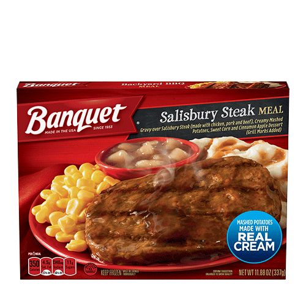

Banquet Classic Salisbury Steak Frozen Single Serve Meal

Come on children, what can be so bad? It's Salisbury Steak day!
With quality, mouthwatering ingredients, a great meal is minutes away with Banquet Classic Salisbury Steak. Enjoy this savory Salisbury steak, smothered in gravy and served up with hearty sides of creamy mashed potatoes and sweet corn, as well as a cinnamon apple dessert. Made with wholesome ingredients, Banquet's wide selection of homestyle meals will please everyone in your family. Sit down to a tasty meal tonight, with 350 calories, 12g protein, and 0g trans fat; contains milk, soy, and wheat. Banquet serves up honest, wholesome microwave meals, bringing more value to your table with large portions and quality ingredients. This pack contains 11.88 Ounces of Banquet Classic Salisbury Steak.
Ingredients
Mashed Potatoes:
- Rehydrated Potato Flakes and Granules (Water, Potatoes, Mono- and Diglycerides, Citric Acid, Disodium Dihydrogen Pyrophosphate, BHT, Sodium Bisulfite)
- Margarine (Soybean Oil, Water, Salt, Hydrogenated Soybean Oil, Monoglycerides, Sodium Benzoate, Soy Lecithin, Medium Chain Triglycerides, Calcium Disodium EDTA, Vitamin A Palmitate, Beta Carotene [Color], Vitamin D3, Natural and Artificial Flavor)
- Cream
- Soybean Oil
- Nonfat Dry Milk
- Salt
- Sugar
- Monosodium Glutamate
- Xanthan Gum
- Guar Gum
- Flavoring
Gravy:
- Water
- Modified Corn Starch
- 2% or Less of the Following: Salt, Monosodium Glutamate, Flavorings, Caramel Color, Corn Syrup Solids, Whey, Autolyzed Yeast Extract, Hydrolyzed Soy Protein, Sugar, Extractives of Paprika, Vegetable Juice Concentrates (Celery, Carrot, Onion and Leek), Disodium Inosinate & Disodium Guanylate, Xanthan Gum, Propylene Glycol
Salisbury Steak:
- Mechanically Separated Chicken
- Pork
- Water
- Beef
- Textured Vegetable Protein (Soy Flour, Caramel Color)
- Breader (Enriched Bleached Wheat Flour [Bleached Wheat Flour, Niacin, Reduced Iron, Thiamine Mononitrate, Riboflavin, Folic Acid], Durum Flour, Leavening [Sodium Bicarbonate, Sodium Acid Pyrophosphate] Yeast)
- 2% or Less of the Following: Soy Protein Concentrate, Salt, Dehydrated Onion, Caramel Color, Flavoring Sodium Phosphate, Dextrose, Natural Flavors, Citric Acid, Soy Lecithin
Cinnamon Apple Dessert:
- Water
- Apples (Citric Acid and Ascorbic Acid to Retain Color)
- Sugar
- Brown Sugar
- Modified Corn Starch
- Natural Flavor
- Acetylated Monoglycerides
- Modified Food Starch
- Salt
- Cinnamon
- Lemon Juice Concentrate
- Propylene Glycol
- Ethanol
- Spice
- Lemon Oil
Corn:
Steps
Cook only one at a time.
- Cut and remove film from dessert.
- Microwave on high 6 to 7-1/2 minutes.
- Check that food is cooked thoroughly to 165 degrees F. Careful, it's hot!
- Let stand 2 minutes; stir potatoes and enjoy!